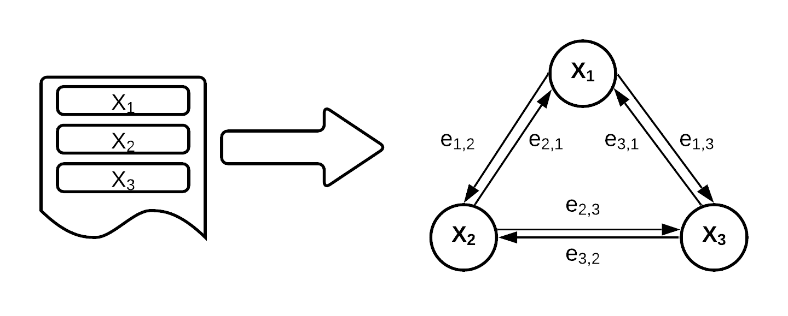
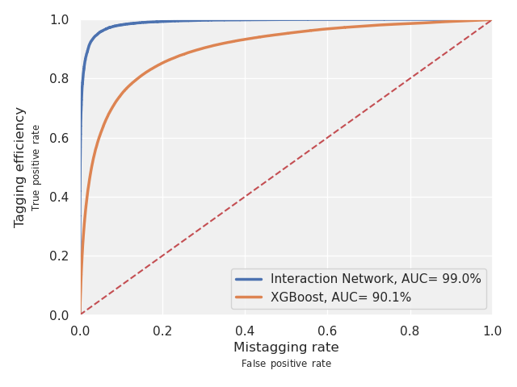
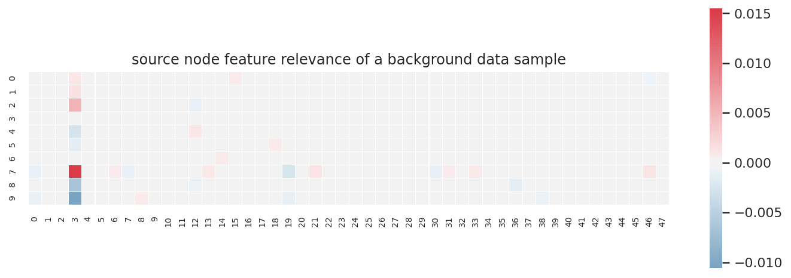

ABSTRACT
While graph interaction networks achieve exceptional results in Higgs boson identification, GNN explainer methodology is still in its infancy. To introduce GNN interpretation to the particle physics domain, we apply layerwise relevance propagation (LRP) to our existing Higgs boson interaction network (HIN) to calculate relevance scores and reveal what features, nodes, and connections are most influential in prediction. We call this application HIN-LRP. The synergy between the LRP interpretation and the inherent structure of the HIN is such that HIN-LRP is able to illuminate which particles and particle features in a given jet are most significant in Higgs boson identification. The resulting interpretations are ultimately congruent with extant particle physics theory, with the model demonstrably learning the importance of concepts like the presence of muons, characteristics of secondary decay, and salient features such as impact parameter and momentum.
Intro
Graph neural networks (GNN) are notoriously difficult to interpret, and those employed in the particle physics domain are no different. The graph interaction network has gained popularity with high energy physicists studying fundamental particles because this graph model achieves a highly competitive accuracy, while still working with relatively simple and unprocessed data. However, it is often not fully understood how or why the graph interaction networks make their classifications. Layerwise Relevance Propagation is a method we use to investigate how these models' inner workings might relate to the physical properties of the universe.
The Higgs boson is a particle that was hypothesized in 1964 by Peter Higgs, and essentially suggested to represent a universal field that is essentially responsible for mass. Big Deal, right? But it took decades before it was actually confirmed. Evidence finally appeared in 2012, at the large hadron collider, where scientists slam particles together really really fast to make other particles, rare and important particles like the higgs boson. But even with the particle collider constantly firing, a higgs event is hard to come by. Not only that, these detectors don’t get to pick up a literal higgs boson, because it exists for only a brief moment in time before decaying. The detector has to look at the decays, which come in the form of particle jets, which is, fittingly, the form of our data.
Particle Jet Data
Context on these "jets", and our data. When a spray of particles hit the detector, the particle flight pathways and measurements are reconstructed into what are called tracks, and then grouped under cone-like clusters. But for the purposes of the model, it's good to know that we actually train on simulation data. Why? Because in quantum physics, we can only predict things probabilistically, so there is no way to confidently label real LHC data. We can say “oh, this was probably a Higgs boson,” but there’s no way of really fully knowing.
The simulation constructs data on a fully ground up basis, building off of physics rules that have been theorized and confirmed. A benefit of this is that we can also lessen the rarity of the Higgs boson signal, so that it’s actually useful to train this model. In the simulated dataset, every entry is an individual jet, and each jet can have a variable number of particles, from as little as only 2 tracks to more than 60. For each jet we’ve isolated 48 features, features like momentum, mass, angle...ultimately, the goal is to look at a jet, and say whether it came from a Higgs signal, or is simply background.
There is a specific Higgs decay that we are looking for: the Higgs Boson decaying into a pair of b hadrons. There are several other permutations of higgs decay that can occur but H to bb is the most common. For the sake of simulation, we have this heavy artificial particle X, which decays into a pair of Higgs bosons, each of which decay into pairs of b hadrons. To make things tougher, a given jet wouldn’t only have b hadrons, it’d also be full of other particles from adjacent and related decays.
It’s altogether quite chaotic, which is why the classification problem in question is one suited for machine learning.
The Higgs Boson Interaction Network Model
That brings us to the Higgs Boson Interaction network, or HIN. This deep learning model finds pretty desirable success for the problem of Higgs boson identification.
Interactions networks are a kind of Graph Neural Net. As its name suggests, the interaction network excels at modeling the interaction of objects in complex systems. For the inputs, we take the simulated data and regroup it into a complete directed graph where every node is a particle, with the 48 feature values grouped by particle under the node, and every edge represents a directional relationship between particles.
Why do we represent the jets as graphs? Remember: a jet is a cluster of particles, and there is no inherit ordering of those particles. So graph models are desirable in that they reflect the absence of an inherit ordering. Even better, by fully connecting the graph, we are laying a truth for the model to understand. These particles are all connected in some way, they come from the same collisions, primary decays, maybe even the same secondary decays. It is then just up to model training to decide how connected they are and how important those connections are to determining whether it is a Higgs signal.
We built the model in PyTorch Geometric, which really helps facilitate a lot of the graph connections and the training structure. The core part of the HIN is the interaction block. The interconnectedness of this interaction block allows us to model the flow of information between nodes, or pairs of particles. PyTorch Geometric’s MetaLayer function abstracts a lot of this interconnectedness for us. Note how when the new edge hidden features are calculated, they influence the new node hidden features and global hidden features, and likewise when new node features are calculated, and so on.
Each block is encoded with its respective transformation sequences: concatenations, linear transformations, batch normalizations, and ReLU activations. Our fully trained model will pass the input data through these blocks and return a softmaxed probability of how likely a jet is to be a Higgs boson signal.
But most importantly here’s how it performs: Here's a lovely 99% ROC AUC. Compared to a straightforward boosted decision tree, our interaction network AUC boundary is nearly a right angle, which is quite ideal!
So we have this model, with a pretty splendid accuracy. But we don’t automatically understand how or why the model comes to these conclusions. This is where LRP comes in:
Layerwise Relevance Propagation
LRP is a technique that has found use in several other neural networks, especially image convolutional neural networks. More recently, its potential for GNN explanation is being discovered. Like water in a forking river, we branch across the model pathways, distributing relevance scores throughout each layer, all the way back to the inputs. In simple words, we want to use LRP to find out how relevant each part of the input is to the output. So we take our input matrix, use some LRP magic, and for every value in the input, we get a corresponding score telling us how relevant it is the the output.
For our model, this means that LRP allows us to interpret model behavior on a jet by jet basis. Recall that the IN takes a jet as input, and outputs a Higgs boson likelihood for that jet. Here, we will reverse this process using LRP: input the Higgs Boson likelihood, and in return we find out which particles, edges, even features of that jet input were most relevant.
Now, you might have realized that LRP is very similar to a regular back-propagation of the model, except that it is propagating the relevance score. It operates on a gradient times input convention that refers to the Taylor expansion based calculation used to get relevancy at each layer.
Look at this diagram. Follow the color density from the output as it moves backwards through the nodes. The more “relevant” nodes get more weight, and therefore color. For our model, this will allow us to highlight relevancy for both nodes, and edges.
Now for the equation we’re using to propagate relevance: The LRP-epsilon rule. The complicated math equation defined above is used at each layer to propagate relevance through the model. The rule is derived from the gradient times input concept, with the addition of one more element: The epsilon refers to a small quantity added to the denominator. With this, we avoid numerical instabilities, and also absorb some of the relevance score such that only the most important features are highlighted.
Dummy Model
We made fake data, and labeled it using an equation such that the only important features were 0 and 3. Everything else is useless noise.
How do we read this map? The relevance scores are visualized in this heatmap, which has the same dimensions as the input. Each cell in the heatmap corresponds to an entry in the raw input, and it lights up if the entry is relevant to the final prediction. Positive or negative, the brighter the color, the more relevant it is to the prediction. The columns correspond to the 48 features whereas the rows correspond to the 10 tracks in the dummy jet.
So clearly feature 3 is aggressively activated. You may be wondering why feature 0 is blank. We actually saw this result and circled back to our label equation, realizing that even though both feature 0 and 3 are in the equation, only feature 3 mattered to the label. And LRP realized that before we did. So it’s kinda funny how this slight error in the construction of our sanity check actually exposed a deeper truth about the dummy data, which honestly just makes us more confident in the validity of the method.
Visualizing Relevance with HIN-LRP